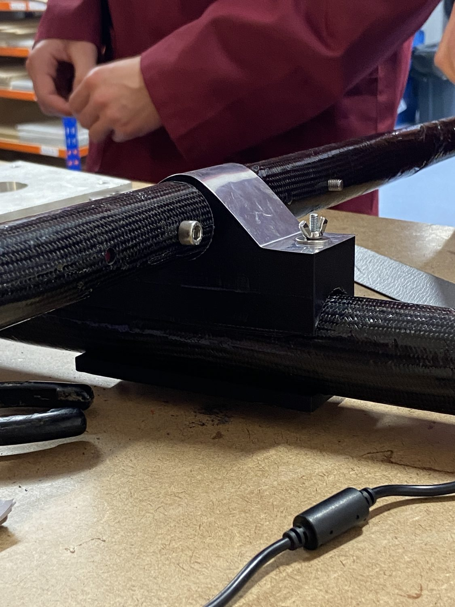
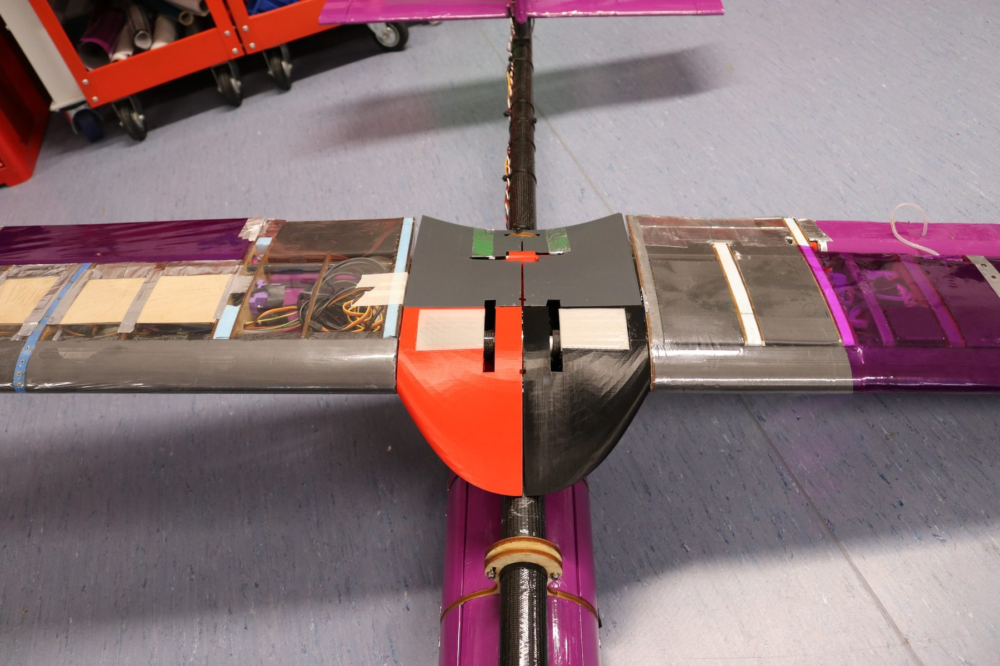
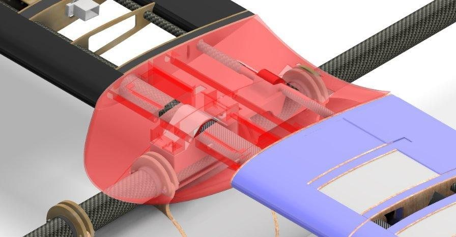
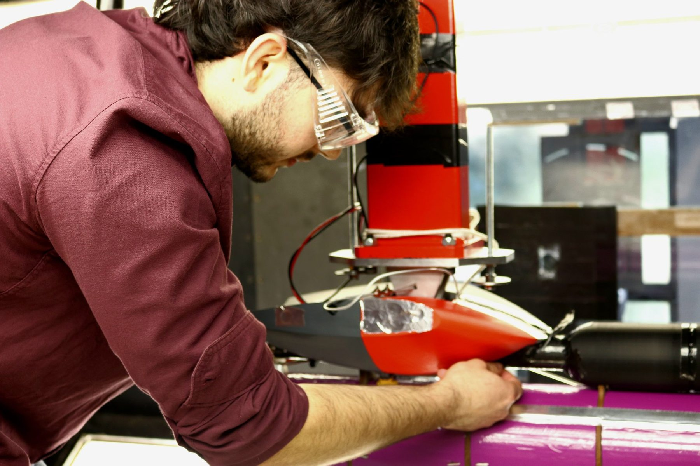
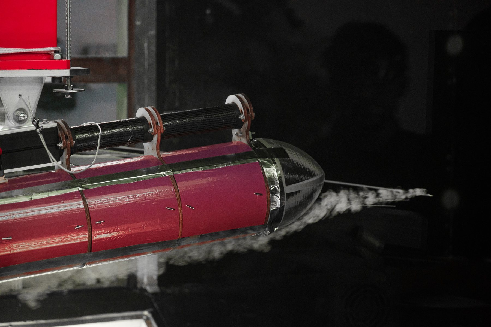
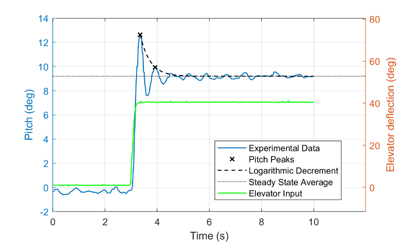
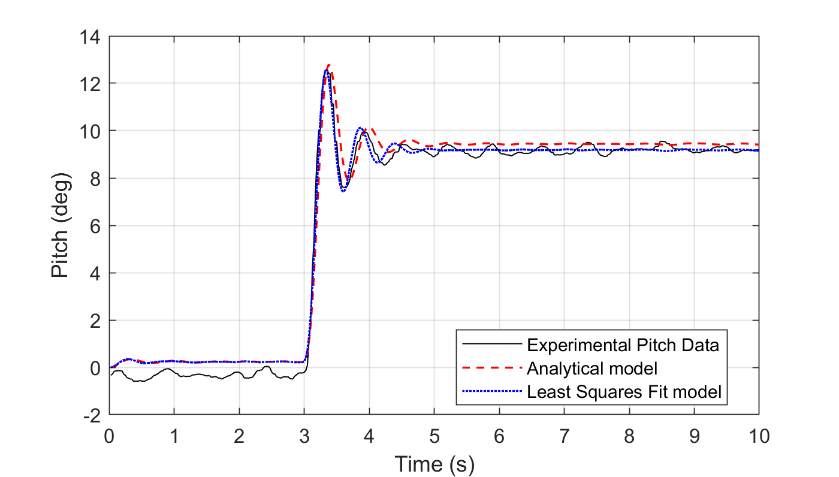
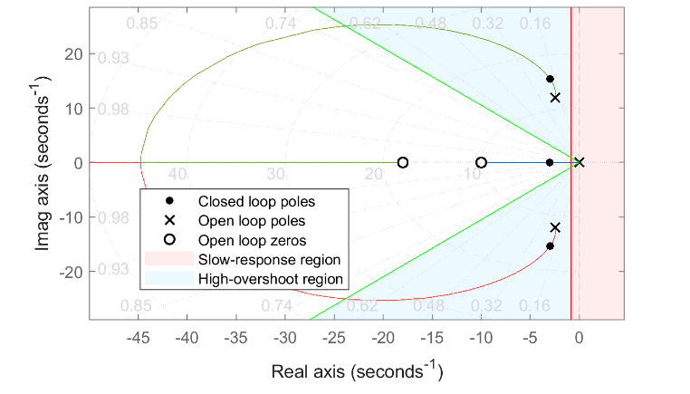
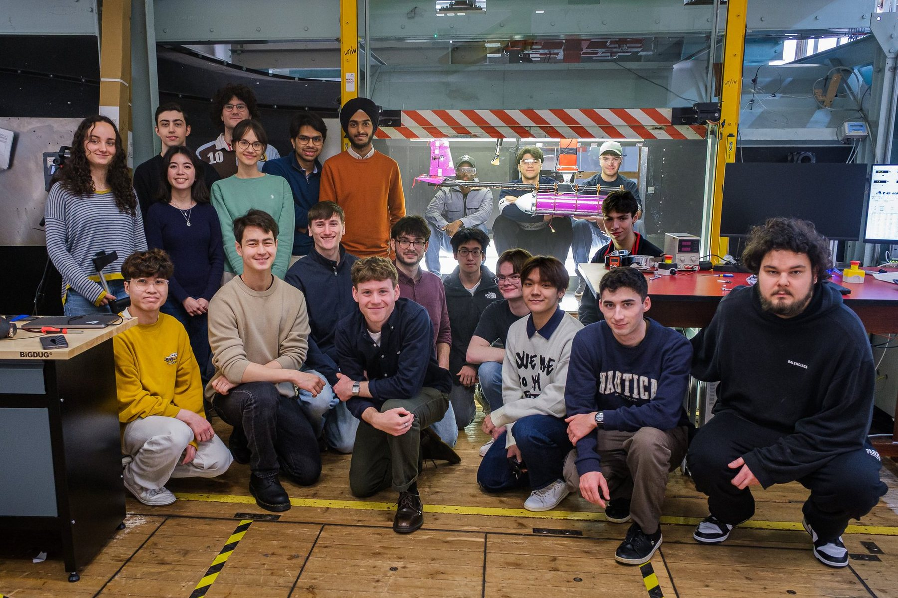

AVDASI2 group design project · University of Bristol · 2024 to 2025
Agricultural survey UAV: design, integration and testing
Our design brief was a UAV for agricultural surveying. In the joints and fairings team, I worked on structures, aircraft integration and testing.
My contribution
I developed the split clamp and fairing, assembled the subteams’ CAD into the complete aircraft, helped plan the structural tests and operated the wind tunnel. I later used the tunnel pitch data to identify a model and design PI and PID controllers in simulation.
Built, load-tested and wind-tunnel tested
The team’s assembled aircraft, March 2025.
Aerodynamic, structural and control results
Team wind tunnel comparison
20.3 N vs 21.7 N dragLower measured drag with the EMP fairing, nose cone and MWP fairing than the baseline EMP configuration. The mounting hardware affected the flow near the fairing.
Joint design iteration
18% lower joint massLower PLA infill with aluminium-sheet reinforcement, guided by structural calculations.
Centre-bar yield prediction and test
15% above predicted yield loadYielding began at 1.5 kN against my conservative 1.3 kN prediction. The test continued to pod failure at 1.6 kN; the centre bar remained in one piece.
My PID design · simulation
1.27 s settling · 0% overshootStep response of the controller on the identified UAV model; 0.5 s rise time. The PI design settled in 2.4 s, also without overshoot.
Prototyping and aircraft integration
Assembling the wing, fuselage and empennage CAD into one aircraft revealed that the two wings, developed by separate teams, had their rear spar connections in different positions.
I raised it with my team and reworked the main wing joint to accommodate both, adding aluminium reinforcement after we questioned relying on the printed joint alone. The two sets of CAD now fitted together and the joint could be assembled.
We iterated through CAD, printed prototype, test and refinement, and I printed selected concepts so ideas could be fitted and bolted before being committed.

A printed joint with aluminium reinforcement on the carbon-fibre centre bar.
Developing the split clamp
The first printed joint, at 100% infill, could not stop the centre bar rotating. I proposed a friction lock: splitting the upper section gave a three-piece joint that clamps the bar when bolted and leaves easier bolt access.
Hand calculations then guided aluminium-sheet reinforcement around the upper joint, allowing lower PLA infill and reducing joint mass by 18%.
From a single fitting to the split clamp (team report).

The installed fairing, wing-root interfaces and access openings.
Fairing and interfaces
I developed the fairing’s shape and attachments to fit the wing-root and fuselage interfaces, keep the fasteners accessible and print in mechanically joined sections. The team chose the shape with a weighted decision matrix.

The fairing in the aircraft CAD assembly.
In the wind tunnel
I fitted the fairing and operated the tunnel, controlling speed, test stages and recording. The complete EMP, nose-cone and MWP-fairing configuration recorded 20.3 N of drag, compared with 21.7 N for the baseline EMP configuration. This gave us a measured reduction for the combined configuration.
The individual changes mattered: the nose cone brought drag down to 18.2 N, while adding the MWP fairing brought it back to 20.3 N. The mounting hardware disturbed the flow near the fairing, and the baseline lacked wings or spar surrogates, so I treated the results as a comparison of the tested configurations. Separately, the team’s simplified Autodesk CFD model predicted 19% lower drag for the V3 wing-joint fairing.
Working through these comparisons taught me to identify exactly what changed between runs and how the support hardware affected the flow.

Fitting the fairing to the fuselage before a wind-tunnel run.

Smoke visualisation over the aircraft in the tunnel.
The ultimate-load test, 7 March 2025. Select the video to play it.
Loading the airframe to failure
I helped plan and run the structural tests, progressively loading the assembled airframe until failure. My conservative calculation predicted the centre bar would begin to yield at 1.3 kN. We observed the onset of plastic deformation at 1.5 kN, a load 15% higher than predicted, and continued until the pod failed at 1.6 kN.
The centre bar had plastically deformed when I removed it, but had not fractured. The test therefore reproduced the yielding mode I expected, with a higher onset load than my simplified calculation predicted. The printed wing and tail joints showed no visible cracking.
In the calculation, I assumed the centre bar carried the full bending load. In the assembled joint, the connected CFRP wing spar also contributed bending stiffness and shared the load. That conservative assumption helps explain the later onset of yielding. I used a calculated reserve factor of 1.20 in the structural sizing; the test gave me a physical check on both the expected deformation mode and the conservatism of the simplified load path.

Pitch-response data used to estimate damping, frequency and static gain (coursework, p. 12).

Recorded wind tunnel pitch response compared with the analytical and least squares models, under the same elevator input.
Identifying a UAV pitch model from response data
I used the tunnel pitch response, recorded through LabVIEW, to identify a second order model from elevator to pitch: peak spacing gave frequency, logarithmic decrement damping and the steady response gain.
A MATLAB tfest fit matched the recorded response at 90.89%, against 86.89% for the analytical model; both captured the main transient, with tunnel turbulence explaining the residual fluctuations.

Root-locus design in the UAV pitch study. The report explains why the second-order overshoot region cannot be treated as a reliable predictor for this controller (p. 14).
PI and PID design: checking the actual response
I designed PI and PID controllers against settling and overshoot targets using root locus, then checked the full step responses because the added controller dynamics invalidated the second order design region.
Aggressive tuning reached 0.05 s rise time but demanded too much elevator, so I reduced the gain to about 0.5 s rise, 1.27 s settling and no overshoot in simulation, with a 48° phase margin.
In the simulated step response, my PID design settled in 1.27 s with 0% overshoot and a 0.5 s rise time. The PI design settled in 2.4 s, also without overshoot.

The team in the wind-tunnel hall.
Team problems and what I did about them
Early on I hesitated over structural decisions. Revisiting lectures, redoing hand calculations and talking to the other structures specialists made me confident enough to contribute and to arrange meetings on test planning and data sharing.
After the rear spar mismatch, I would agree interface positions before each subteam starts its CAD.
When involvement dipped, I organised an honest reflection session on how we shared the work, and after a tunnel delay a Five Whys analysis traced it to our incomplete understanding of the set-up.
Tools and methods
Autodesk Inventor, Fusion 360, 3D printing, hand calculations, LabVIEW data acquisition, MATLAB, Simulink, system identification and PI/PID control